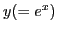
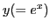
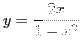
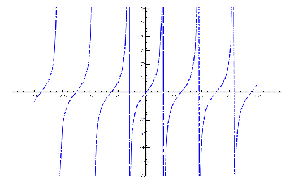
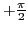

- Consider the function
 , and let
, and let
If we assume values for x and calculate the corresponding values of y,
we can plot a series of points. Drawing a smooth line free-hand through
these points: a good representation of the general behavior of the
function may be obtained. This picture or image of the function is
called its graph. It is evidently the locus of all points satisfying
equation (3.4).
Figure 3.1:
The parabola  .
.
|
It is very easy to create the above plot in SAGE, as the example below
shows:
[fontsize=\scriptsize,fontfamily=courier,fontshape=tt,frame=single,label=\sage]
sage: P = plot(x^2,-2,2)
sage: show(P)
Such a series or assemblage of points is also called a curve.
Evidently we may assume values of  so near together as to bring
the values of
so near together as to bring
the values of  (and therefore the points of the curve) as near
together as we please. In other words, there are no breaks in the
curve, and the function is continuous for all values of .
(and therefore the points of the curve) as near
together as we please. In other words, there are no breaks in the
curve, and the function is continuous for all values of .
-
The graph of the continuous function , plotted by drawing the
locus of
 ,
,
Figure 3.2:
The sine function.
|
It is seen that no break in the curve occurs anywhere.
-
The continuous function
is of very frequent occurrence in
the Calculus. If we plot its graph from
we get a smooth curve as shown.
Figure 3.3:
The exponential function.
|
From this it is clearly seen that,
- (a)
- when
 ,
;
,
;
- (b)
- when
 ,  is positive and increases as we pass
towards the right from the origin;
,  is positive and increases as we pass
towards the right from the origin;
- (c)
- when , is still positive and decreases as
we pass towards the left from the origin.
-
The function
is closely related to the last one
discussed. In fact, if we plot its graph from
it will be seen that its graph has the same relation to
 and as the graph of
and as the graph of  has to and .
has to and .
Figure 3.4:
The natural logarithm.
|
Here we see the following facts pictured:
- (a)
- For
 ,
.
,
.
- (b)
- For
 , is positive and increases as increases.
, is positive and increases as increases.
- (c)
- For , is negative and increases
in numerical value as , that is,
.
- (d)
- For , is not defined; hence the
entire graph lies to the right of .
- Consider the function
, and set
If the graph of this function be plotted,
it will be seen
that as approaches the value zero from the left
(negatively), the points of the curve ultimately drop
down an infinitely great distance, and as approaches the
value zero from the right, the curve extends upward infinitely far.
Figure 3.5:
The function .
|
|
The curve then does not form a continuous branch from one side
to the other of the axis of , showing graphically that
the function is discontinuous for , but continuous for all
other values of .
- From the graph (see Figure 3.6) of

it is seen that the function
is discontinuous for the two values , but
continuous for all other values of .
Figure 3.6:
The function
.
|
|
-
The graph of
shows that the function is discontinuous for infinitely
many values of the independent variable , namely,
, where  denotes any odd positive or negative integer.
denotes any odd positive or negative integer.
Figure 3.7:
The tangent function.
|

|
-
The function
has infinitely many values for a given value of , the graph of equation
consisting of infinitely many branches.
Figure 3.8:
The arctangent (or inverse tangent) function.
|
|
If, however, we confine ourselves to any single branch, the
function is continuous. For instance, if we say that shall
be the arc of smallest numerical value whose tangent is ,
that is, shall take on only values between
 and
and
 , then we are limited to the branch passing
through the origin, and the condition for continuity is satisfied.
, then we are limited to the branch passing
through the origin, and the condition for continuity is satisfied.
- Similarly,
, is found to be a many-valued
function. Confining ourselves to one branch of the graph of
we see that as approaches zero from the left,
approaches the limit
, and as
approaches zero from the right, approaches the limit
. Hence the function is discontinuous when
. Its value for can be assigned at pleasure.
- A piecewise defined function
is one which is defined by different rules on
different non-overlapping invervals. For example,
is a continuous piecewise defined function.
Figure 3.10:
A piecewise defined function.
|
|
For example,
is a discontinuous piecewise defined function, with
jump discontinuities at and  .
.
Figure 3.11:
Another piecewise defined function.
|
|
Functions exist which are discontinuous for every value of the
independent variable within a certain range. In the ordinary
applications of the Calculus, however, we deal with functions
which are discontinuous (if at all) only for certain isolated
values of the independent variable; such functions are therefore
in general continuous, and are the only ones considered in this book.

![\includegraphics[height=4cm,width=7cm]{ln.eps}](img395.png)